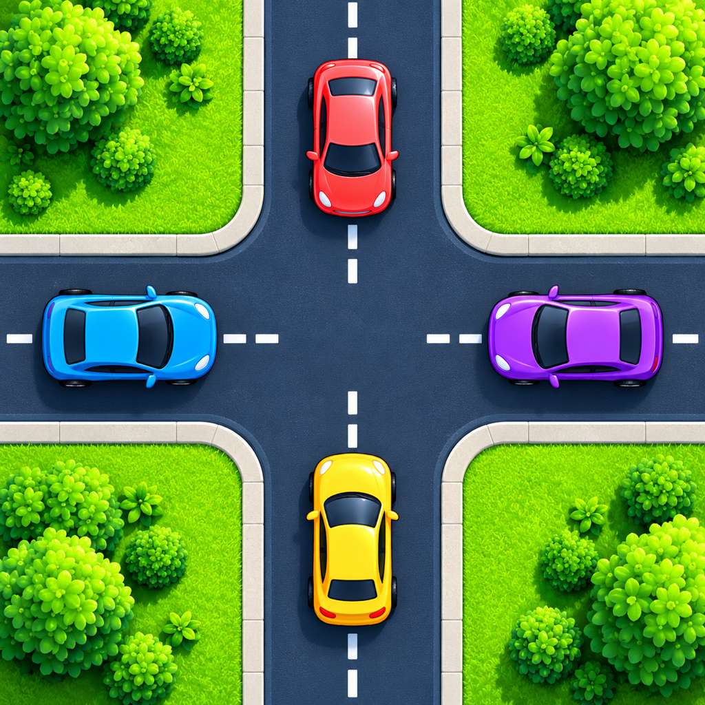
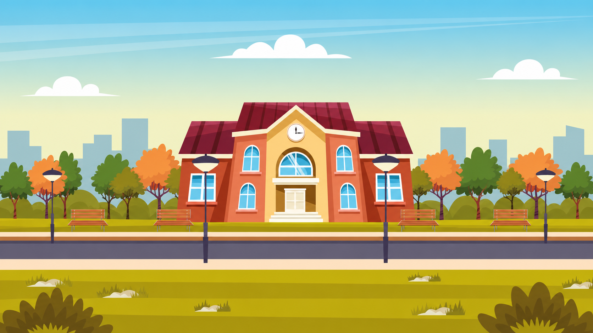

PARK · THINK · GO
Parking Lot
A clear path starts with one good move. Untangle parked cars in the right order.

Traffic RescueSMALL MOVES. BIG RESCUES.A COLORFUL CAR PUZZLE FOR iOS
A crowded road. A clever plan. Clear the jam, open new routes, and turn a little thinking into a big rescue.
Waiting for App Review · iPhone & iPad
Clear the jam. Make the rescue.
Solve 64 puzzles across parking lots, emergency routes, traffic lights, construction lanes and school pickups.
Simple to start.
Plenty to think about.
FIVE REASONS TO KEEP MOVING
From a parking lot to the school run, each world gives your next move a different purpose.
PARK · THINK · GO
A clear path starts with one good move. Untangle parked cars in the right order.
MAKE ROOM FOR A RESCUE
Open the road so an ambulance, fire truck or police car can reach its destination.
CHOOSE YOUR MOMENT
The right car is only half the answer. Green means go; timing is part of the puzzle.
OPEN THE BLOCKED LANES
Move the construction vehicles to open blocked lanes and clear the zone.
EVERYONE ON BOARD
Clear the traffic, collect children in stop order, and take everyone to school in one trip.
THE SCHOOL RUN, REIMAGINED
Make space for the bus. Visit each numbered stop. Let the children board automatically, then bring everyone to school in one trip.

THE BEAUTY IS IN THE NEXT MOVE
Check which vehicles block each other. A deliberate tap uses a move, even when the route is blocked.
Move vehicles in the right order. Watch the signals and the construction lanes.
Finish the mission, enjoy the celebration, and unlock the next puzzle.
A FEW THINGS YOU MIGHT WONDER
Traffic Rescue is an iOS car puzzle game with five worlds and 64 levels. Move vehicles in the right order, work around obstacles, and open a route through the city.
Clear the other traffic first. Tap the bus to visit the next numbered stop. Children board automatically, and the bus waits for the next tap. After the final pickup, one last tap takes everyone to school.
Each level includes two free hints. Replaying does not refill them. After that, you can choose to watch a rewarded ad for one extra hint. No coins are deducted.
Free play includes optional rewarded ads for extra hints and an interstitial may appear after every third completed level. The one-time Lifetime Pro purchase removes both ad formats. Pro players receive two free hints per level; extra Pro hints cost 50 earned coins, with confirmation before spending.
Progress is saved locally. In Settings, Sync merges progress with your private iCloud save; Restore retrieves it. Use the same iCloud account on both devices. Last synced and Last restored update after successful server operations. A network connection and available iCloud storage are required.
Firebase Analytics starts automatically to measure gameplay and technical usage. The app has no analytics switch. Analytics advertising consent remains disabled; AdMob consent and tracking permission are handled separately. Read the privacy policy for details.
NEED A HAND?
Find a quick answer or send us a message about your next move.